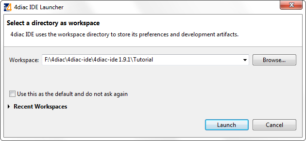
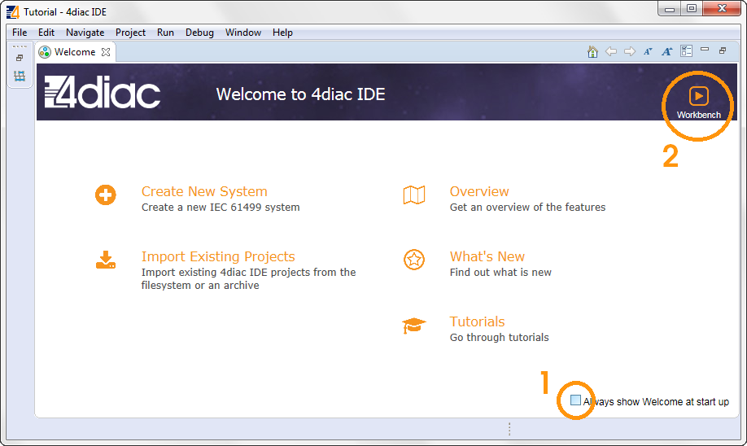
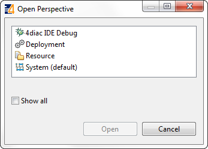
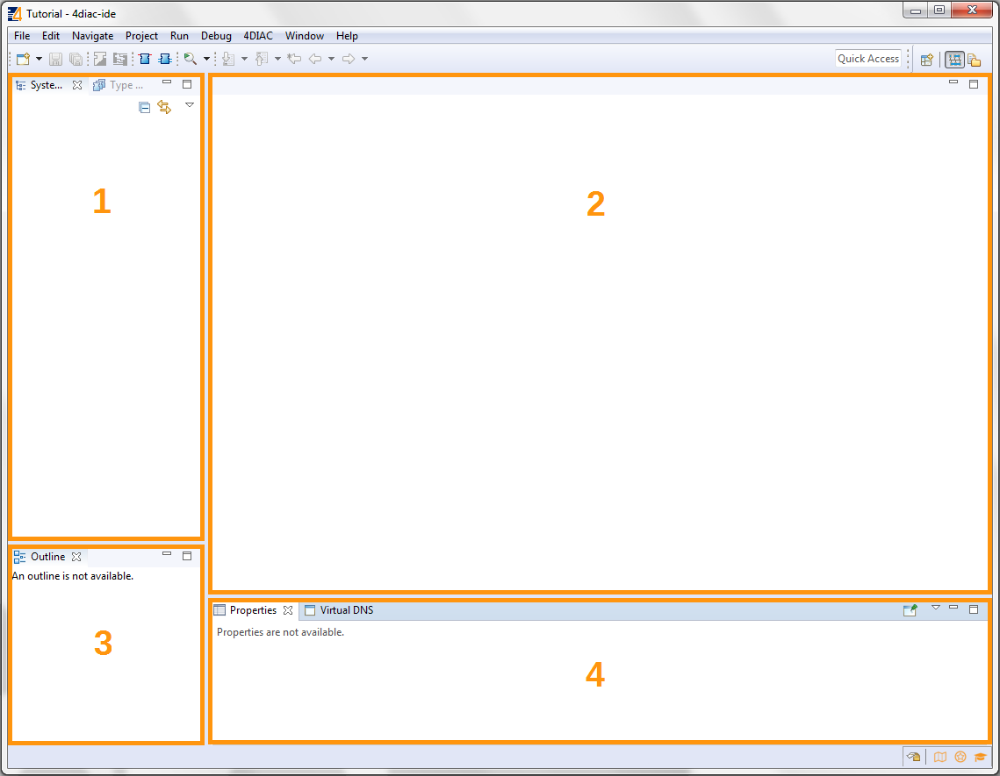
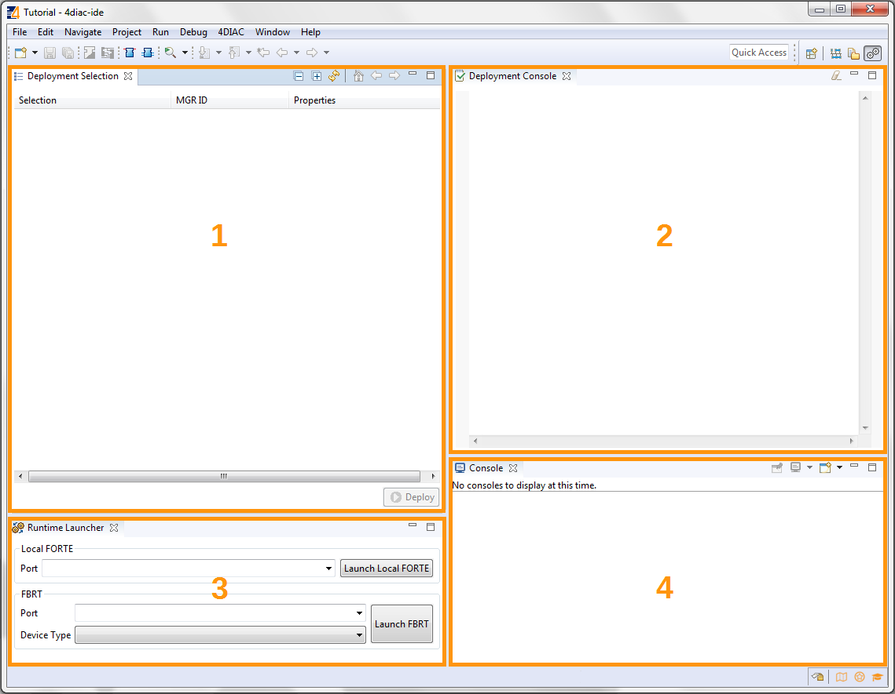
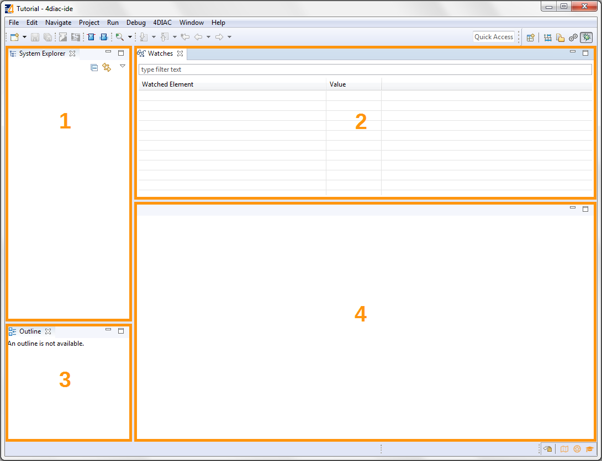
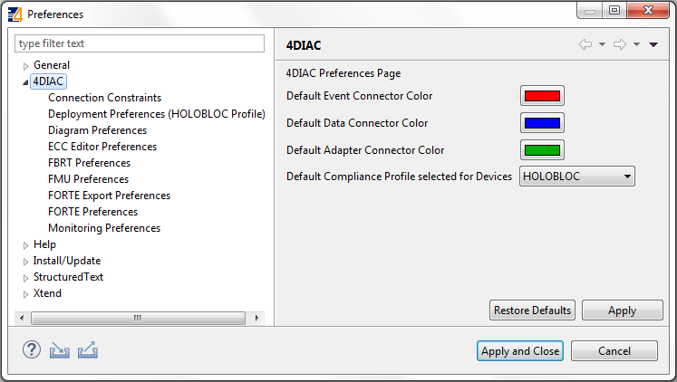
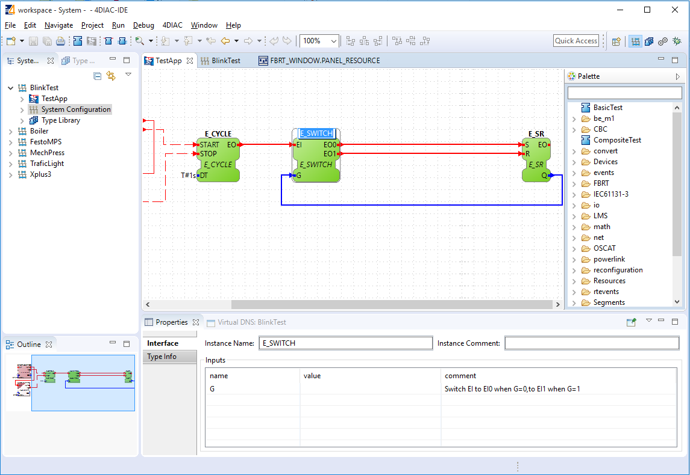

Step 0 - 4diac IDE Overview
This page is part of a guide that gives a walk-through over the major 4diac IDE features.
- 4diac IDE Overview (YOU ARE HERE!)
- Use 4diac Locally (Blinking tutorial)
- Distribute 4diac Applications
- Deploy Applications Remotely
- Create Your own Function Block Types
- Other Basic Features
- Advanced Features
- Deploying new FBs with the Dynamic Type Loader
An overview is presented in this step 0 - about elements, perspectives and properties of 4diac IDE that you need to know about to use it smoothly.
Starting up 4diac IDE
Open 4diac IDE to start the tutorial.
You will be prompted to select or create your workspace.
For this tutorial, we name our workspace "Tutorial".
A workspace is a folder on your computer that stores one or more 4diac IDE projects.

After you created a workspace, 4diac IDE presents its welcome screen.
Here you can get an overview about 4diac IDE, create a new project, import an existing project or read more about the chapters of the tutorial.

At first it's best to deselect the checkbox at the bottom-right corner so you can start up 4diac IDE faster the next time.
You can open the welcome screen later again via Help → Welcome.
Next you click the workbench button. This brings you to the main screen of 4diac IDE.
4diac IDE Elements
Since 4diac is compliant to the IEC 61499 standard, 4diac IDE provides the standard's elements for work (you can check here to revise):
- System: It contains the System Configuration and its corresponding Applications.
 Application: It contains the desired application in terms of a FB network.
Application: It contains the desired application in terms of a FB network. Device: It represents a hardware device such as a programmable logic controller (PLC) or a microcontroller.
Device: It represents a hardware device such as a programmable logic controller (PLC) or a microcontroller.- Resource: It is responsible for the execution of the control logic within its own execution context.
- Function blocks (FB):
- Basic FB (BFB): It uses an execution control chart (ECC) to control event execution. Algorithms are associated with the different states inside an ECC.
 Composite FB (CFB): It contains a FB network of existing FBs. Its FB interface passes events and data on to the FBs within the CFB, which in turn pass events and data among themselves and out to the CFB's normal output interface.
Composite FB (CFB): It contains a FB network of existing FBs. Its FB interface passes events and data on to the FBs within the CFB, which in turn pass events and data among themselves and out to the CFB's normal output interface.- Service interface FB (SIFB): It is usually used for something that cannot be done within the IEC 61499 standard such as communication with devices or network segments. It helps to first understand basic and composite FBs. SIFBs are then used to realize only what cannot be done using a BFB/CFB.
 Adapter: It combines a set of input/output events and data to one connection. On the one hand it simplifies the IEC 61499 Application and on the other hand it better decouples Application parts providing an interface concept, which allows adopting the polymorphic concept of object-oriented programming
Adapter: It combines a set of input/output events and data to one connection. On the one hand it simplifies the IEC 61499 Application and on the other hand it better decouples Application parts providing an interface concept, which allows adopting the polymorphic concept of object-oriented programming
4diac IDE Perspectives
The 4diac IDE provides three perspectives, which can be added via the  button in the upper-right corner:
button in the upper-right corner:

- The System perspective is used to configure everything regarding your system. It includes:
- System Manager, which allows creating and editing your System and Applications.
- System Configuration, which allows managing Devices, Resources and Segments according to IEC 61499. The Resources are used for Application mapping and insertion of communication function blocks to other Devices and Resources.
- Applications according to the IEC 61499 Application Model
-
 Deployment perspective, where the Applications are launched and tested.
Deployment perspective, where the Applications are launched and tested.
-
 4diac IDE Debug perspective, where Applications can be monitored.
4diac IDE Debug perspective, where Applications can be monitored.
System Perspective
The perspective can be changed in the upper-right corner. The System perspective is reached via the button. The System perspective is divided into the following five areas:
- System Management area, which is used for managing IEC 61499 compliant applications and configuring Devices and Resources. The Type Navigator is in a tab next to it and lists the available function block library for every System as well as the default library.
- Editor area, which contains the Application editor for modeling of control applications, the System editor for modeling the System configuration, and the Device and Resource editor for modeling the Resource configuration.
- Outline of Applications, System configurations, Devices, and Resources
- Property view, which allows parameterizing function block instances, Devices, and Resources

Deployment Perspective
The perspective can be changed in the upper-right corner. The Deployment perspective is reached by the button. The Deployment Management perspective is divided into the following four areas:
- Deployment Selection for selecting a System, Devices or Resources which have to be deployed to controller runtimes
- Deployment Console for visualizing deployment messages
- Runtime Launcher and button Deploy, which start the deployment process and launch IEC 61499 compliant runtimes
- Console output if the runtime is running locally.

Debug Perspective
The perspective can be changed in the upper-right corner. The Debug perspective is reached via the button. The Debug perspective is divided into the following four areas:
- System selection, where Systems can be marked for monitoring by right-clicking and choosing
- Application editor, which shows your Application and highlights the variables marked for watching.
- Watches view, which allows watching the current values of the variables you marked for watching.
- Outline of Applications, System configurations, Devices, and Resources

4diac IDE Preferences
Before starting the engineering process of IEC 61499 Applications, you should set the preferences for the 4diac IDE under .
Later in Step 1 - Use 4diac IDE locally, you'll learn more about the preferences. For now it is good to know that there are different preference pages, where various parameter for the 4diac IDE can be set (e.g. connection colors).
In order to use the Runtime Launcher of the deployment perspective, the location of the run-time executable files must be set in the properties. Currently two runtime environments are supported:
- 4diac Forte: path/forte.exe
- Holobloc's FBRT: path/fbrt.jar

Selecting an element (e.g. Systems, Devices, Resources, Applications, Function Blocks, ...) and pressing the right mouse button opens the context menu with several menus to manipulate the specific element.
Additionally, the following items are provided in the permanent toolbar located below the menu:
 and
and  allow hiding either the event or the data connections in the Application Editor Editor
allow hiding either the event or the data connections in the Application Editor Editor allows printing the Applications and the Automation Hardware
allows printing the Applications and the Automation Hardware allows saving changes from the toolbar or the file (Save or Save All is used), alternative access by pressing Ctrl + S
allows saving changes from the toolbar or the file (Save or Save All is used), alternative access by pressing Ctrl + S- provides undo and/or redo of last changes
- provides zoom functionality in the toolbar or the menu entries in the context menu of an editor but also by pressing Ctrl while scrolling the mouse wheel
- Function Block instances or Devices can be deleted pressing DEL or selecting the context menu entry Delete.
- Instance names of Function Blocks, Resources or Devices can be changed.
The instance name field can be edited in the properties view.
When a function block is selected, its properties are displayed at the bottom of the window.
Additionally, a slow double-click also allows editing the name:
First, select the FB by clicking onto it and, then, click on the FB again to edit the instance name.

Where to go from here?
Now that you got an overview of the major parts of 4diac IDE, you can start using it:
Step 1 - Use 4diac IDE Locally
If you want to go back to the Start Here page, we leave you here a fast access:
Where to Start
Go to top